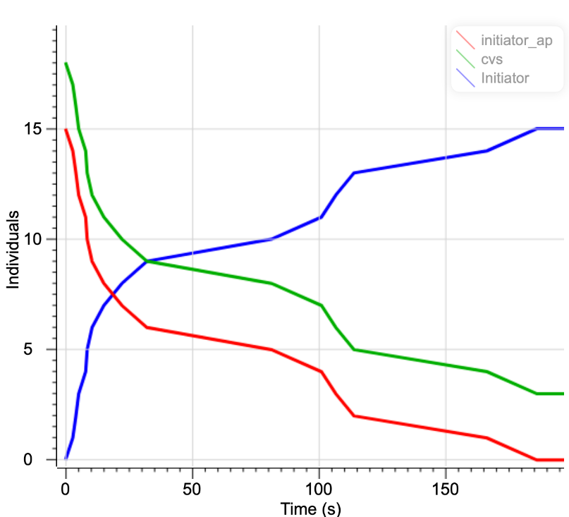

Simulation
Purpose
1:Investigate whether the DNA used is stable in a room temperature environment. 使用するDNAが室温環境下で安定かどうか調べる。
2:Find out if HCR actually occurs. 実際にHCRが起きるかどうかを調べる。 (実際のHCRの動作性のシミュレーション)
Evalution of DNA stability(DNAの安定性の評価)
For the first purpose we use "NUPACK"(7) to determin the hairpin structure. For the following strand combination, simulation carried out using NUPACK. The length of the stem and loop was adjusted with reference.(8) The results are shown in Fig. 1-2.

Next, we designed the DNA sequence based on the structure of the initiator and hairpin. The sequence of the determined DNA is shown in Figure x.
Fig.3 DNA seqence base
H1, H2, Initiator (H1, H2, Initiator = 1.0 μM).
We used NUPACK to determine the temperature stability of the three complexes(H1+H2+Initiator). The result of structural stability between 4-90˚C are shown below
Figure 5 shows that the closer the structure is to red, the more stable it is. Look at the three complexes on the left of the figure 5. It shows a red color, indicating that it is stable. We found that this structure is stable at room temperature. We assume that the test kit will be used in a room temperature environment. From the results in this figure, the secondary structure should not collapse even if it is performed at room temperature. So we can get accurate results. This result does not affect the test kit at home.

Fig.5 The stability of three complexes at 24℃
This is hairpin of H1-H2-Initiator structure at 24˚C.
Consideration of whether HCR will occur(HCRが起きるかの考察)
For the second purpose. we performed HCR simulation using Visual DSD(9). First, when Inisiator was introduced in the presence of two hairpin DNAs, it was confirmed whether HCR progressed by the two hairpin DNAs. The reaction system is shown in fig6. (2のHCRのシュミレーションはVisual DSDを用いて行った。まずは、ヘアピン構造がHCRのみを起こす場合を考える。反応体系は以下のとおりである)
Fig.6 Reaction of initiator and hairpin DNA
The results of time-dependent changes in the concentration of each DNA obtained from the above reaction system are shown in the figure.7.

Fig.7 Time change of Concentration of each substance
It was found that H1 was opened by the Initiator, and the hairpin of H2 was opened and bound in a chain reaction with it. This result suggests that the designed DNA promotes HCR properly. InitiatorによりH1が開き，それと連鎖的にH2がヘアピンが開かれ結合することがわかった．この結果は設計したDNAによりHCRが適切に進行することを示唆している．
In reality, the stem of the hairpin may open, causing a leak reaction in which the HCR progresses without an initiator. Therefore,we evaluated the stability of the system considering the leak reaction. The modified reaction system is shown in fig.8.

Fig.8 HCR results when incorporating a leak reactio
When we try to simulate this reaction, it looks like this.この反応をシュミレーションしてみるとこのようになる
The results of time-dependent changes in the concentration of each DNA obtained from the above reaction system are shown in the figure.9.

Fig.9 Time change of the concentration of each substance when the leak reaction is introduced
Although there is some blurring, both the initiator and hairpin tend to decrease every hour, and we think that the reaction can occur without any problem. 多少のブレはあるが、時間ごとにイニシエーター、ヘアピンはどちらも減少傾向にあり、問題なく反応は起こせていると考える。
Whether an initiator is generated from the aptamer complex. アプタマー複合体からイニシエーターが生成されるかどうか
Using Visual DSD, we investigated whether an initiator was generated when there was a sequence that binds complementarily to an aptamer.
アプタマーと相補的に結合するような配列があった際に、イニシエーターが生成されるかをVisual DSDを用いて調べた。

Fig10 Reaction of aptamer complex with spike protein
The time change of the concentration of each substance is shown in Fig.11.
Fig.11 Time change of Concentration of each substance
Over time, the concentration of the aptamer complex has decreased and the concentration of the initiator has increased over time.